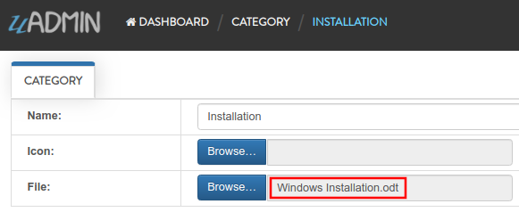

Basic Functions¶
In this section, we will cover the following functions in-depth listed below:
uadmin.MaxImageHeight¶
MaxImageHeight sets the maximum height of an image.
Type:
int
For versions 0.2.0 and above and Settings model is available, visit Max Image Height page for an example.
For versions below than 0.2.0 or Settings model is not available, visit uadmin.MaxImageWidth for the example.
uadmin.MaxImageWidth¶
MaxImageWidth sets the maximum width of an image.
Type:
int
For versions 0.2.0 and above and Settings model is available, visit Max Image Width page for an example.
For versions below than 0.2.0 or Settings model is not available, follow this approach:
Let’s set the MaxImageWidth to 360 pixels and the MaxImageHeight to 240 pixels.
func main() {
// Some codes
uadmin.MaxImageWidth = 360 // <-- place it here
uadmin.MaxImageHeight = 240 // <-- place it here
}
uAdmin has a feature that allows you to customize your own profile. In order to do that, click the profile icon on the top right corner then select admin as highlighted below.

By default, there is no profile photo inserted on the top left corner. If you want to add it in your profile, click the Choose File button to browse the image on your computer.

Let’s pick a photo that surpasses the MaxImageWidth and MaxImageHeight values.

Once you are done, click Save Changes on the left corner and refresh the webpage to see the output.

As expected, the profile pic will be uploaded to the user profile that automatically resizes to 360x240 pixels.
Quiz:
uadmin.MaxUploadFileSize¶
MaxUploadFileSize is the maximum upload file size in kilobytes.
Type:
int64
For versions 0.2.0 and above and Settings model is available, visit Max Upload File Size page for an example.
For versions below than 0.2.0 or Settings model is not available, follow this approach:
Go to the main.go. Let’s set the MaxUploadFileSize value to 1 MB. It is 1 multiplied by 1024 (Kilobytes) multiplied by 1024 (Bytes).
func main() {
// Some codes
uadmin.MaxUploadFileSize = int64(1 * 1024 * 1024)
}
Run the application, go to your profile and upload an image that exceeds the MaxUploadFileSize limit. If you click Save changes…

The profile picture has failed to upload in the user profile because the file size is larger than the limit.
Quiz:
uadmin.PageLength¶
PageLength is the list view max number of records.
Type:
int
For versions 0.2.0 and above and Settings model is available, visit Page Length page for an example.
For versions below than 0.2.0 or Settings model is not available, follow this approach:
Go to the main.go and apply the PageLength function.
func main() {
// Some codes
uadmin.PageLength = 4 // <-- place it here
}
Run your application, go to the Item model, inside it you have 6 total elements. The elements in the item model will display 4 elements per page.

Quiz:
uadmin.RetainMediaVersions¶
RetainMediaVersions is to allow the system to keep files uploaded even after they are changed. This allows the system to "Roll Back” to an older version of the file.
Type:
bool
For versions 0.2.0 and above and Settings model is available, visit Retain Media Versions page for an example.
If Settings model is not available, follow this approach:
Go to the main.go and set the status of the RetainMediaVersions to false.
func main() {
// Some codes
uadmin.RetainMediaVersions = false
}
Run your application, go to the Category model and click Add New Category button on the top right corner of the screen. Let’s add a new record that includes the uploaded file from your computer (e.g. Windows Installation.pdf).

Result:

From your project folder, go to /media/files/(generated_folder_name)/. As expected, the "Windows Installation.pdf” file was saved on that path.

Go back to your application and click the existing record that you have (e.g. Installation).
Now update the file on that record (e.g. PDF file to ODT file).
Result:

From your project folder, go to /media/files/(generated_folder_name)/. As expected, the "Windows Installation.pdf” file was updated from "Windows Installation.pdf” to "Windows Installation.odt” on the same folder.

Exit your application and go to the main.go. This time, set the status of the RetainMediaVersions to true.
func main() {
// Some codes
uadmin.RetainMediaVersions = true
}
Run your application and go to the Category model. Update the file of the Installation record back to PDF.
Result:
From your project folder, go to /media/files/ path. Inside it, there are two generated folders that means the old version of the file is kept and the new version was saved in the different folder.

Quiz:
uadmin.RootURL¶
RootURL is where the listener is mapped to.
Type:
string
Used in the tutorial:
For versions 0.2.0 and above and Settings model is available, visit Root URL page for an example.
For versions below than 0.2.0 or Settings model is not available, follow this approach:
Go to the main.go and assign the RootURL value as /admin/.
func main() {
// Some codes
uadmin.RootURL = "/admin/"
}
Result

Quiz:
uadmin.SiteName¶
SiteName is the name of the website that shows on title and dashboard.
Type:
string
Used in the tutorial:
For versions 0.2.0 and above and Settings model is available, visit Site Name page for an example.
For versions below than 0.2.0 or Settings model is not available, follow this approach:
Go to the main.go and assign the SiteName value as Todo List.
func main() {
// Some codes
uadmin.SiteName = "Todo List"
}
Run your application and see the changes above the web browser.

Quiz:
uadmin.StartServer¶
StartServer is the process of activating a uAdmin server using a localhost IP or an apache.
Function:
func()
Used in the tutorial:
Go to the main.go and put uadmin.StartServer() inside the main function.
func main() {
// Some codes
uadmin.StartServer() // <-- place it here
}
Now to run your code:
$ go build; ./todo
[ OK ] Initializing DB: [15/15]
[ OK ] Initializing Languages: [185/185]
[ INFO ] Auto generated admin user. Username: admin, Password: admin.
[ OK ] Server Started: http://0.0.0.0:8080
___ __ _
__ __/ | ____/ /___ ___ (_)___
/ / / / /| |/ __ / __ __ \/ / __ \
/ /_/ / ___ / /_/ / / / / / / / / / /
\__,_/_/ |_\__,_/_/ /_/ /_/_/_/ /_/
Quiz:
uadmin.Theme¶
Theme is the name of the theme used in uAdmin.
Type:
string
For versions 0.2.0 and above and Settings model is available, visit Theme page for an example.
For versions below than 0.2.0 or Settings model is not available, follow this approach:
From your project folder, click on "templates”.

Inside templates, click on "uadmin”.

Create a new folder named "custom”.

Inside custom folder, create a new file named "home.html”.

Inside home.html file, apply the following codes below to display a header that shows "Welcome to Home Page”.
<!DOCTYPE html>
<html lang="en">
<head>
<meta charset="UTF-8">
<meta name="viewport" content="width=device-width, initial-scale=1.0">
<meta http-equiv="X-UA-Compatible" content="ie=edge">
<title>Home Page</title>
</head>
<body>
<h1>Welcome to Home Page</h1>
</body>
</html>
Now go to main.go and apply the Theme function that assigns the custom folder.
func main() {
// Some codes
// "custom" is the name of the folder inside the templates/uadmin path
// that uAdmin will run when the user starts the server
uadmin.Theme = "custom"
}
Run your application to see the result.

Quiz: